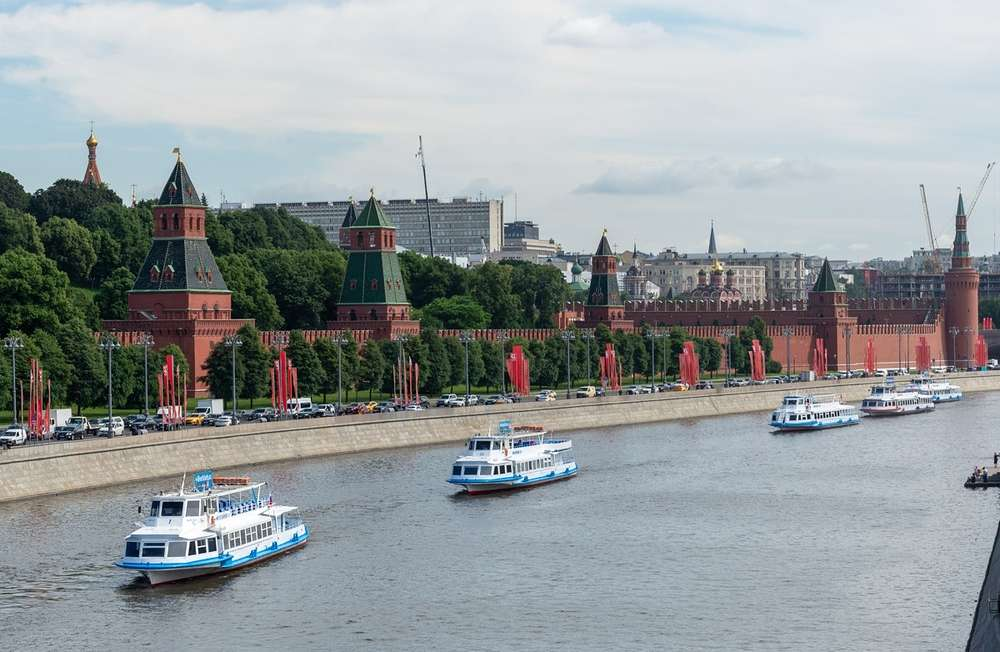

Прогулка по центру города

Детали поездки
Продолжительность: 1,5 часа
Цена: 500 руб.
Отправление: Причал №1
Прибытие: Причал №5
Доплата за обед: 300 руб.
Маршрут: Кремль, Храм Христа Спасителя, Парк Культуры
Теплоходы: Экскурсия с гидом, панорамный вид на достопримечательности
ЗабронироватьОписание прогулки
Насладитесь незабываемой прогулкой по Москве-реке, где вы сможете увидеть главные достопримечательности центра города. Опытный гид расскажет вам об истории и интересных фактах, связанных с Кремлем, Храмом Христа Спасителя и Парком Культуры.
Рекомендуем эту прогулку всем, кто хочет познакомиться с Москвой с необычного ракурса и получить яркие впечатления. Не забудьте взять с собой фотоаппарат, чтобы запечатлеть панорамные виды на город.